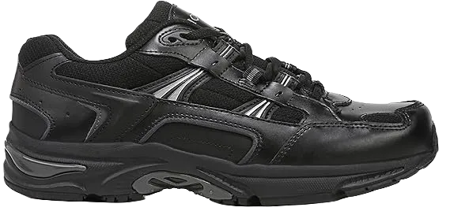
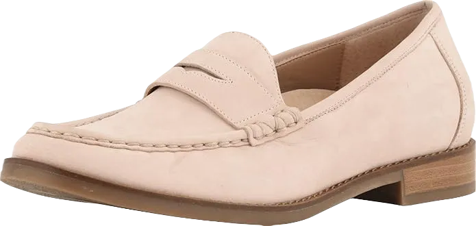
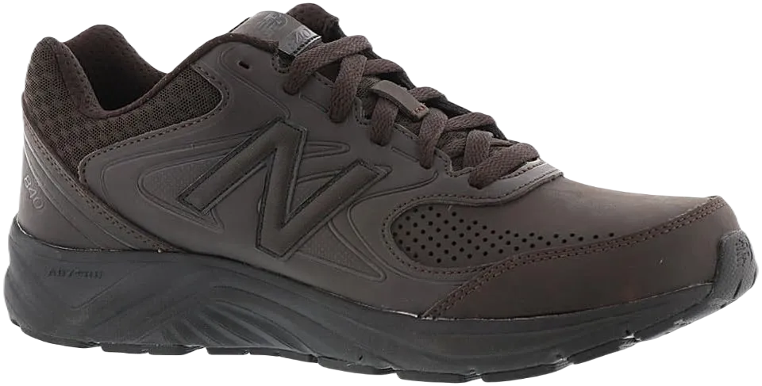
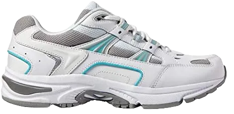
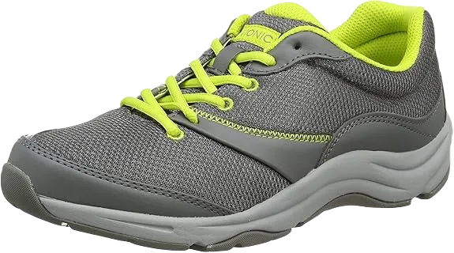
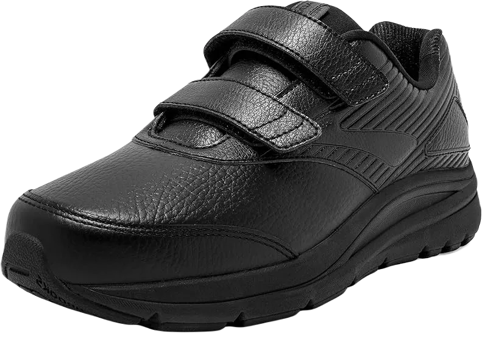

TOP 14 Best Shoes for Piriformis Syndrome in 2024
When dealing with piriformis syndrome, it’s essential to choose a shoe brand that prioritizes comfort. This is why the designer has incorporated a high-quality collar and tongue, both of which are expertly cushioned for added support.
The materials used in these shoes are carefully selected to keep your feet dry while running or walking in wet conditions. Additionally, the breathable upper construction ensures optimal airflow, enhancing overall comfort during your activities.
-
#1
New Balance Health shoe
.webp)
Crafted from 100% pure full-grain leather, this shoe is both durable and high-performing. The elastic outsole design allows for natural foot flexion, enabling you to move comfortably at all times.
Featuring a wide toe box, these shoes provide ample space to ensure long-lasting comfort. The ABZORB insole effectively manages shock and weight while running, enhancing overall performance.
To ensure your comfort, the manufacturer has incorporated a high-quality supportive system that utilizes a rollbar design. This feature keeps you comfortable whether you’re sitting, running, or climbing stairs. Walking on uneven terrain, such as cobblestones or rocky surfaces, is also enjoyable thanks to the presence of the C-CAP cushioned sole. -
#2
Vionic Walker
The double-thick cushioned sole plays a crucial role in providing exceptional support and cushioning for your foot, helping to prevent irritation of the sciatic nerve. Best Shoes for Piriformis Syndrome—the durability of this piriformis walker is impressive, featuring an upper made from 100% pure leather.
Breathable mesh is incorporated into one side of the upper, ensuring excellent airflow and keeping your feet cool. This design also enhances moisture-wicking capabilities, guaranteeing that your feet stay dry throughout the day.
Additionally, a high-quality PU shoe base has been included to promote comfort and stability. The roomier toe box design helps prevent blisters, ensuring a comfortable fit for extended wear. -
#3
Vionic Women’s Wise Waverly Loafer
If you're a loafer enthusiast like my mom and are dealing with piriformis syndrome, the Waverly loafer from Flight may be the ideal shoe brand you’re looking for.
This iconic loafer features a high-quality nubuck material for its upper, which contributes to its impressive durability. Best Shoes for Piriformis Syndrome—the shoe also includes a removable leather footbed that offers exceptional cushioning. The Vionic loafer incorporates a biomechanically designed footbed that provides genuine support and comfort for your feet.
Having piriformis shoes that are 100% approved by the American Podiatric Medical Association (APMA) is a strong indicator that their performance and durability meet professional standards. The renowned footbed of this loafer was developed by skilled podiatrists to ensure excellent cushioning, whether you’re walking on flat surfaces or rugged terrain. Additionally, the treated leather construction ensures that water stays out, keeping your feet dry. -
#4
Mona flying Leather Oxfords
.webp)
If you're a fan of classic and stylish footwear but are dealing with piriformis syndrome, the Mona flying shoe allows you to maintain your timeless look while prioritizing your health.
Best Shoes for Piriformis Syndrome—its lightweight design and quality textile lining make it suitable for a wide range of activities, from work to casual outings, all while accommodating your piriformis condition.
These shoes perform well in rainy or wet conditions thanks to their synthetic sole. The upper is crafted from latex-coated leather, ensuring that your feet remain 100% waterproof. With a heel height of just 0.98 inches, the Mona shoe is also perfect for everyday wear, meeting your comfort needs without sacrificing style. -
#5
Brooks Addiction
.webp)
Our final item is the Streams expansion, which stands out not only for its lightweight design but also for its double-thick cushioned sole that provides exceptional comfort. The upper is crafted from a combination of breathable mesh and pure full-grain leather, promoting excellent foot ventilation.
Best Shoes for Piriformis Syndrome—the inclusion of a spacious wide toe box ensures that your toes and entire foot have plenty of room to flex and move freely.
The upper is constructed from full-grain leather that is lightly coated with latex, enhancing its waterproof capabilities. This innovative design ensures that your feet stay dry in various conditions. Unlike other piriformis condition shoes on our list that use traditional laces, this brand opts for a hook-and-loop closure system, providing a secure and comfortable fit for both wide and narrow feet. -
#6
Orthofeet Best Plantar Fasciitis shoes
.webp)
We offer some of the most comfortable and stylish shoes, recognized as one of the best orthopedic options available. Not only are these Orthofeet shoes designed with functionality in mind, but they also feature an aesthetically pleasing appearance.
These shoes are crafted from synthetic materials and are specifically designed to address various foot conditions, including plantar fasciitis, piriformis syndrome, heel pain, and other types of foot discomfort. With their lightweight and ergonomic sole, they provide exceptional support, while multiple layers of cushioning ensure maximum comfort.
The wide toe box makes them suitable for individuals with hammertoes and sensitive feet. Don’t hesitate to invest in these shoes to enhance your daily movement and overall comfort. -
#7
Gravity Defyer Women’s G-Defy Mighty
.webp)
Are you searching for walking shoes to help with piriformis syndrome? Look no further than the Gravity Defyer Proven Pain Relief Women’s G-Defy Mighty Walk shoe. Specifically designed for women, this shoe is made from a combination of fabric and synthetic materials. It provides relief for heel pain, foot pain, and plantar fasciitis as well.
The Gravity Defyer Proven Pain Relief shoe is equipped with VersoShock Technology, featuring a patented spring system that absorbs shock during your everyday movements. This innovative design converts fatigue into renewed positive energy. The seamless interior is particularly beneficial for sensitive feet.
For those with diabetic neuropathy, this shoe helps prevent irritation, which is crucial for delicate skin. Additionally, the removable insoles allow for orthotic support, so you don’t need to worry if you require orthotics. Its roomy toe box ensures comfort while walking. -
#8
New Balance Men’s 840 V2
Our next recommendation comes from New Balance, a well-respected and trusted footwear brand known for producing a wide range of shoes and accessories used worldwide. The New Balance Men’s 840 V2 Walking Shoe is particularly beneficial for those dealing with piriformis syndrome, offering ample support for various foot issues.
Crafted from 100% leather, the New Balance Men’s 840 V2 provides exceptional comfort and breathability. This imported shoe features a durable rubber outsole and has a low-profile design from the arch to the top. Its ABZORB cushioning enhances shock absorption, making each step more comfortable.
The New Balance Men’s 840 shoe also includes Ndurance technology and removable insoles, offering robust support for those with piriformis syndrome. -
#9
Vionic Women’s Walker
Introducing one of Vionic’s top choices for managing piriformis syndrome: the Vionic Women’s Walker. This leather shoe features a durable rubber sole, and with its premium full-grain leather uppers, you can expect exceptional comfort. The adjustable lacing system allows you to customize the fit for optimal support while walking.
The Vionic Women’s Walker incorporates the Active Motion System (AMS) technology, which includes podiatrist-designed orthotics. This ensures that you experience the right level of cushioning, making it ideal for those with painful feet. Additionally, the flexible and cushioned outsole provides ample support for each step.
A standout feature of this shoe is its antibacterial top fabric lining, which helps to control odors in both your feet and the shoes. The firm thermoplastic heel counter also offers excellent heel support, enhancing stability during movement. -
#10
ASICS Men’s Gel-Nimbus 18
.webp)
The ASICS Men’s Gel Nimbus 18 Running Shoe in Black/Silver/Carbon is renowned for its exceptional comfort, making it one of the most comfortable running shoes available. As a product of the esteemed ASICS brand, this shoe offers impressive support and comfort. Constructed from 100% synthetic materials, it is an imported design. The Fluid Ride technology provides the perfect combination of bounce-back and cushioning.
Designed with padding properties that help alleviate pressure, the ASICS Men’s Gel Nimbus 18 features Rearfoot and Forefoot Gel cushioning systems for enhanced durability. This dual gel system minimizes shock during impact phases, allowing for smooth and flexible foot transitions. The ASICS Fluid Fit upper technology ensures a comfortable fit for runners.
Additionally, the heel gripping system enhances the heel counter, improving the overall fit. The seamless materials used in the shoe help reduce irritation, providing a comfortable running experience. -
#11
Merrell Women’s Encore Q2
.webp)
The Merrell Women’s Encore Q2 Breeze Clog is both a stylish and sophisticated shoe. Although Merrell has established a reputation in the sports industry, they continue to demonstrate their quality and value through their products. Made from 100% synthetic materials, these clogs are excellent for walking, making them ideal shoes for managing piriformis syndrome.
The Merrell Women’s Encore Q2 Breeze Clog features a sleek and attractive design, suitable for various occasions such as the workplace, meetings, or casual outings. The shaft height is approximately the same as the arch, ensuring a comfortable fit. With a durable upper and breathable mesh lining, these clogs provide optimal comfort throughout the day.
Equipped with Merrell Air Cushion technology in the heel, this clog effectively absorbs shock and enhances stability. Additionally, the Nylon Arch Shank provides excellent arch support, ensuring that your feet remain comfortable during extended wear. -
#12
Dr. Solace Performance-X

Introducing the Dr. Comfort Performance-X Men’s Therapeutic Double Depth Shoe, an excellent choice for athletes seeking comfort and support. Crafted with a combination of leather and mesh upper, this shoe is designed to be soft and accommodating for painful feet. It is lightweight and provides optimal arch support and stability.
As an orthotic shoe, the Dr. Comfort Performance-X Men’s offers exceptional comfort. Featuring a no-tie elastic lacing system, it allows for a customizable fit. The seamless design helps prevent skin irritation, making it suitable for extended wear while you're on the move.
These shoes for managing piriformis syndrome are highly breathable, with materials that regulate temperature to keep your feet cool and dry. Additionally, the removable footbeds can accommodate your own orthotics if needed, providing further flexibility in support. -
#13
Vionic Women’s Kona Fitness Shoes
Introducing the Vionic Women’s Kona Fitness Shoes, another top choice for managing piriformis syndrome. Featuring a breathable mesh upper, a removable footbed, and a durable rubber outsole, this footwear receives high praise from many users. While Vionic brings joy and comfort through their products, they remain reasonably priced.
These shoes are perfect for everyday activities, making them ideal for individuals with conditions like plantar fasciitis, plantar fibroma, or piriformis syndrome. Designed to enhance your mobility, the Vionic Women’s Kona provides exceptional flexibility and support.
The Kona model includes a podiatrist-designed footbed, which is a hallmark of every Vionic shoe. This ensures that all their footwear promotes stability from the very first step, enhancing overall comfort and functionality. -
#14
Creeks Women’s Addiction Walker V-Strap
Next on our list is the Creeks Walker V-Strap Walking Shoe, crafted from 100% leather. This shoe features a durable rubber outsole and a Progressive Diagonal Rollbar, providing excellent stability and flexibility. Its double thickness design helps manage foot discomfort, pronation, and various other foot pains.
The Creeks Women’s Addiction Walker comes equipped with a full-length MoGo midsole, delivering exceptional cushioning. Designed for long-lasting wear, it maintains comfort without compromising support. These top-rated shoes for piriformis syndrome also include HydroFlow, a silicone-based system strategically placed in the heel for added shock absorption.
With its combination of quality materials and innovative technology, this shoe is ideal for anyone seeking relief from foot pain while staying active.